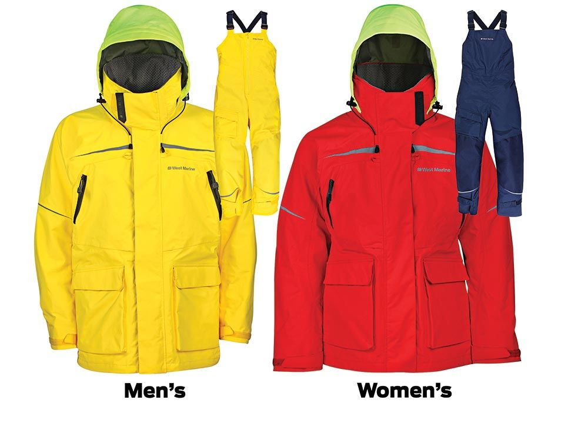

Clothing
There is different clothing for different types of weather. Lets say you are in the heat and you don't want to be hot. Say we are riding in the boat when it is winter time and the water is splashing up on you. Or it is just winter time and you need some warm clothes. I am going to be explaining what types of clothes are necessary for the right types of weather. I like to wear the long-sleeve shirt that is dri fit when it is winter.
Let's start with summertime clothing. I believe in my opinion that a long sleeve breathable shirt is the best for the summertime. The other would be shorts. A light pair of shorts like a dri-fit material. If you get in the water they will dry considerably fast. Or if it rains and you want to dry off quick they will dry faster than regular cotton clothes. They can dry in any type of temperatures..jpg)
If you need some warm clothes that protect you from the water when it is cold outside. I would recommend some Frog Toggs which is a clothing company that specializes in foul weather gear. Another brand is West Marine they are built better than Frog Toggs. While Frog Toggs are considerably more cheap West Marine is the strongest and more reliable brand. West Marine can cost up to 600 dollars while Frog Toggs cost 60-100 dollars.
